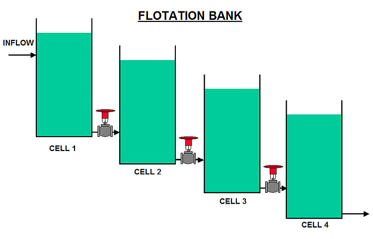
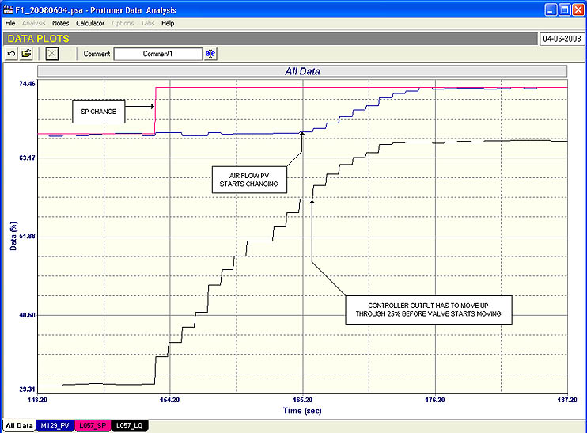
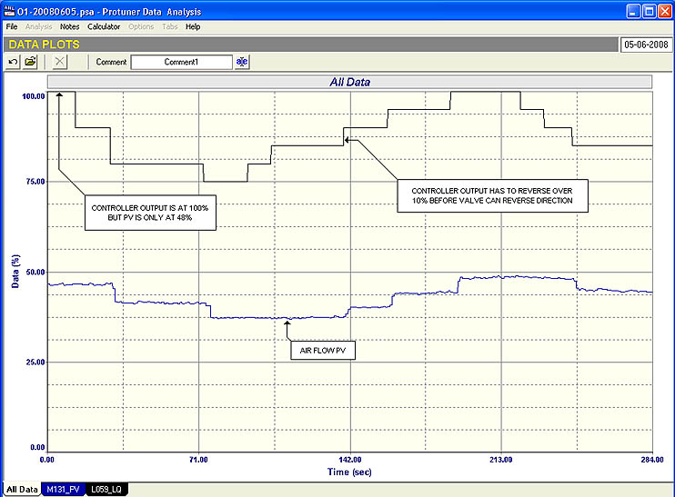
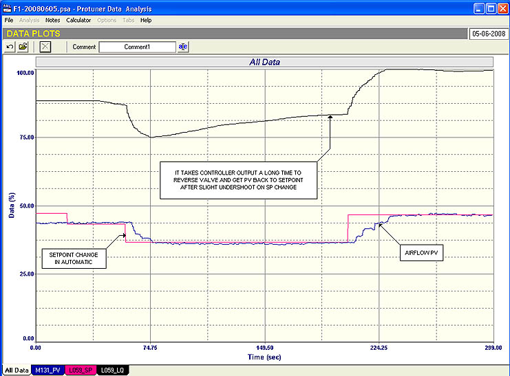
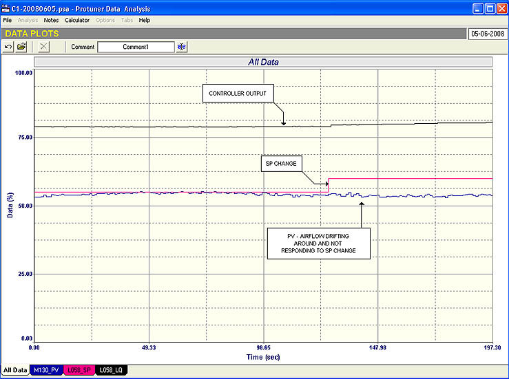
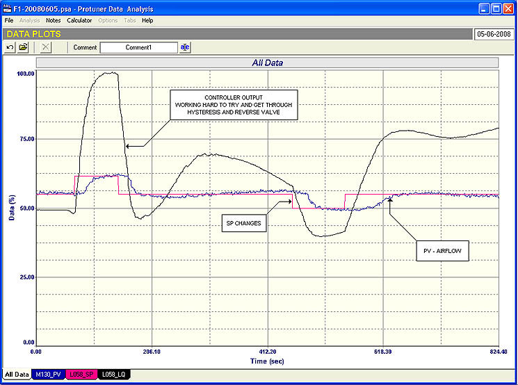

|
| [Home] [About us] [Contact us] [Training] [Optimisation services] [Protuner] |
| [Loop signatures] [Case histories] |
|
Control Loop Case History 105 During my career spanning close on 20
years solely as a specialist in control loop optimisation, I
have worked in most industries that employ regulatory controls.
However living and working in During the past year I have been particularly busy optimising controls in Concentrator plants on several platinum mines. Whilst working in these plants I have been privileged to work alongside some extremely competent metallurgists. As a result I have managed to learn a fair deal about various processes, and specifically on understanding the control needs and problems associated with them. One of the most difficult areas to control in metal extraction processes are the flotation banks. These are to be found in a wide range of different metal extraction plants, including platinum group metals,. To give a very basic and simplistic description of the process, the slurry coming from the milling section of the plant is mixed with a “frothing” reagent, and passed through a series of large tanks or cells, (refer Figure 1). In each of these cells, air is bubbled through the mixture, and the valuable components of the products adhere to the bubbles, and rise to the surface forming a layer of froth, whilst the waste product remains behind in the liquid phase below the froth layer. The froth containing the products floats off at the top of the tank, and the remaining liquid gravitates out through a valve into the next cell, and the process is repeated down the bank. Some banks can contain many cells.  There
are two controls associated with each cell, namely level and air
flow control. The
purpose of the level control is to keep the liquid phase in the
cell at a very constant level, and the airflow is to control the
amount of froth and bubble size.
In earlier days the level control was considered to be of
the most importance, but over the past few years it has been
realised that the air flow is also critical.
The importance of these controls from the economic aspect
cannot be overemphasised. The
profitability of the extraction process is largely dependant on
efficient flotation. The
actual metallurgical aspects of flotation are in fact very
complex. Much
research has been done into trying to improve flotation
efficiency, and an internet search on the subject results in
many thousands of hits. Many
mines have or are now installing sophisticated advanced control
systems (APC – Advanced Process Control systems).
However efficient recovery even with APC still boils down
to efficient operation of the two controls of airflow and level. From
the control point of view the level control is the more
difficult for many reasons, and a future article will discuss
the basic aspects of this control.
Flow control is a relatively simple process, and
consequently one would expect the airflow controls to be
relatively problem free. However
the experience of myself and several other people has shown that
the airflow control installed in the vast majority of flotation
banks are operating unbelievably badly, and I will concentrate
only on this subject in this article. Control
of flow is probably the simplest of all feedback control
systems. It has fast
dynamics, and should not present any problems at all if the flow
transmitter and control valve work properly.
Therefore I am amazed that these controls are working so
badly on most of the flotation banks I have worked on.
The
main problem appears to be with the control valves.
Initially I thought that possibly it was due to bad
maintenance, but the same problems occur on new plants as well
as old. Also control
valves in other plants on the same mines have not exhibited the
same problems, so I have come to the conclusion that the valves
being specified for this application are probably being sourced
for cost rather than for performance, but it is amazing that
same thing seems to occur on so many different mines, many of
which belong to different mining groups. Possibly
it is a “hereditary” thing, as the airflow controls were in
earlier days regarded as not being very important.
However in these modern times, all metallurgists I have
discussed this with are most concerned about the poor control of
their airflows. The
other area of concern is the flow measuring instrument.
Again rather than using tried, tested, and accurate types
of flow measuring transmitters, money is being “saved” by
employing a much cheaper flow transmitter which works on a
thermal system, where the flow is effectively proportional to
the heat loss as the air passes over a heated element.
This is not to say that very good and reliable thermal
type flowmeters are not available on the market, but the ones
being used on most of the flotation banks I have worked on, are
a much cheaper version. I
personally have not done any tests myself on these meters, but I
do know of tests performed recently by one of the biggest mining
groups on these meters. The
results have shown that they are extremely inaccurate and are
subject to drift. The
mining group is now budgeting to replace all their airflow
meters with more accurate and reliable types.
They are also currently carrying out detailed
investigations on the control valves. It certainly seems to be very silly to try and cut initial costs by using inferior equipment for controls that can make a huge difference to profitability for the plant.  Fig. 2 The
first example here is shown in Figure 2.
It is a closed loop test (with good final tuning
parameters in the controller) on a cell in a Rougher Float Bank,
and shows the response to a setpoint change.
The open loop tests previously carried out (not
illustrated here) had shown the valve had a massive 25%
hysteresis on it. This
is terrible. As a
general guide line a valve should have an absolute maximum of 1%
hysteresis. In the figure one can see how when the setpoint changed the valve (which had previously moved in the other direction) just stayed where it was. The controller output had to integrate through the 25%, before the airflow started to change. This takes quite a lot of time, and it can be realised that the control variance suffers, and it will not help in realising efficient flotation in response to setpoint changes from the advanced control system.  Fig. 3 Another
bad air flow control on a cell in the same bank as the previous
example is given next. Figure
3 is the open loop test. It
shows two bad things. Firstly
a maximum airflow of only about 48% could be obtained with the
valve fully open. This
may have been due to the fact that there was a partial blockage
in the line or valve. Another
possibility is that the valve is undersized, which could be
quite likely as the gain of the
was about 0.5 which can be seen in the test by the
relative sizes of the steps on PV and PD.
(Controller output).
In my Loop Signature series of articles it was shown that
process gain = ΔPV/ΔPD). The operators usually had the setpoint above 50%. This meant that the required flow could never be reached. If the valve was undersized, then a high limit should have been placed on the setpoint to prevent the operators from exceeding the maximum possible flow.  Fig. 4 The second really bad thing that can be seen from the test is the hysteresis on the valve which exceeded 10%. The effect of this hysteresis on the control can be clearly seen in Figure 4, which shows how long it takes to reverse the valve with the controller in automatic.  Fig. 5 The third and last example is also of an airflow on a Rougher Cleaner float cell. Figure 5 shows a closed loop “as found” test which is a test with the as-found tuning. It can be seen that it was absolutely terrible, and leaves one wondering how anyone can tune a loop so badly. There was virtually no control whatsoever. The open loop test has not been shown here, but it proved that the valve on this circuit had a massive 30% hysteresis! Almost unbelievable that such a thing can occur in a plant and that no one was aware of it.  Fig. 6 The
final closed loop test after tuning is shown in Figure 6.
The tuning is a little “hot” resulting in a slight
overshoot on a setpoint change.
It can be seen how the output of the controller has to
work excessively to get through the hysteresis every time the
valve has to reverse, and how relatively long it takes to do
this even on a fast process like flow. An
interesting aside on this, is that virtually every control
school in the world apart from us, teaches people to tune
controllers to give a quarter wave response on a setpoint
change. This means
reversing the valve at least 8 times every time it moves.
This example shows just how completely impractical that
would be on a valve with severe hysteresis.
To
summarise, it is quite scary that people are installing
important plants for float applications with such inferior
equipment and controls. It
would certainly handsomely pay mining groups to be aware of this
and take steps to improve things.
It would result in huge financial benefits. Michael
Brown is a specialist in control loop optimisation, with many years of
experience in process control instrumentation. His main activities are
consulting, and teaching practical control loop analysis and
optimisation. He gives training courses which can be held in clients'
plants, where students can have the added benefit of practising on live
loops. His work takes him to plants all over South Africa, and also to
other countries. He can be contacted at:
|